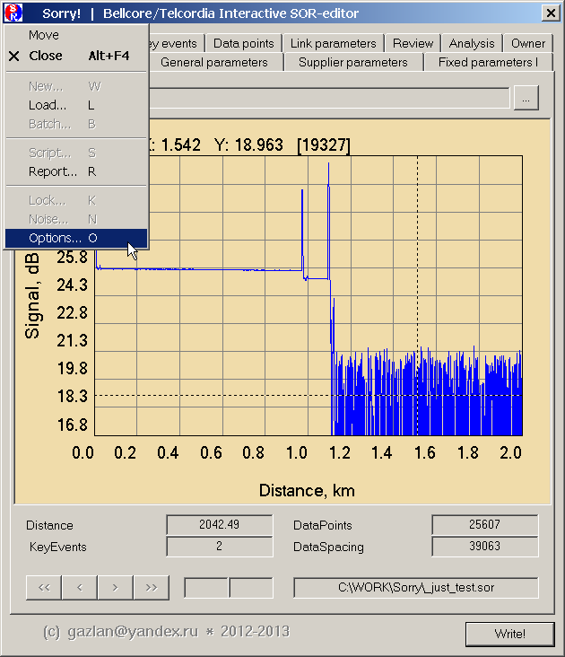
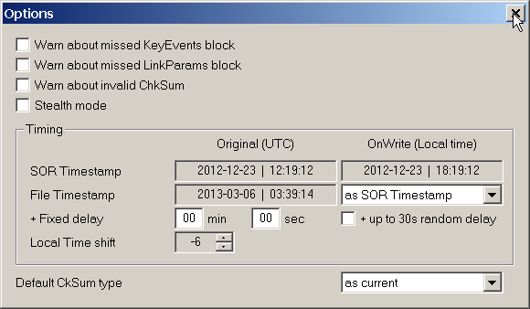

|
File timestamp (дата-время создания файла) может сейчас отслеживать timestamp оригинального файла или отметки времени заголовка SOR-файла (вкладка Fixed I).
Переход в диалог Options - из системного меню.

Может быть задана задержка (сдвиг по времени) относительно выбранного базового времени, например, запаздывание относительно заголовка SOR-файла. Эта величина различна для различных производителей (обычно, в пределах 0..7 минут). Кроме того, может быть включена опция случайного запаздывания в пределах 30 сек. При обработке серии файлов их временные отметки будут сдвинуты на эту случайную величину.
Опция Local Time shift позволяет компенсировать сдвиг локального времени относительно UTC (поправка должна быть взята с обратным знаком). Например, если локальное время +02:00, то поправка должна быть -2.
Поправка обычно не требуется, если запись файлов рефлектометром и их редактирование на компьютере производятся в том же часовом поясе.

|